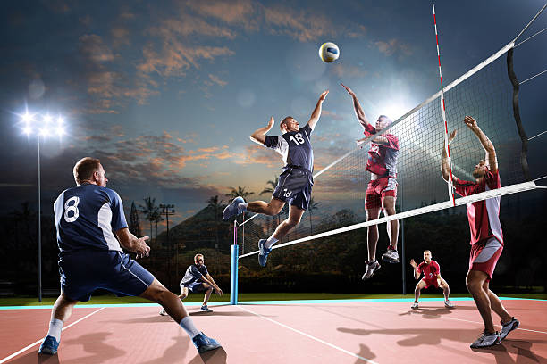
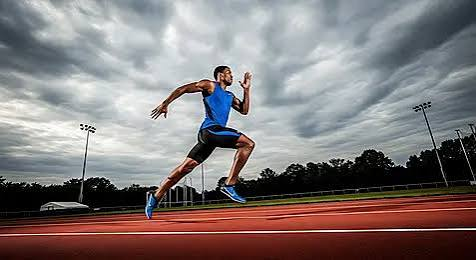
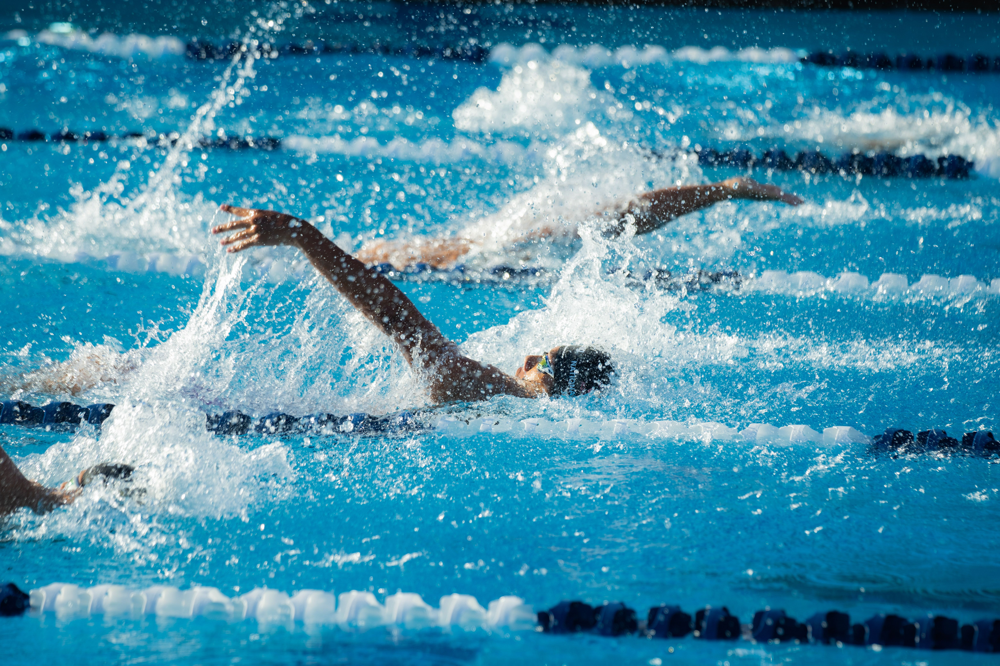
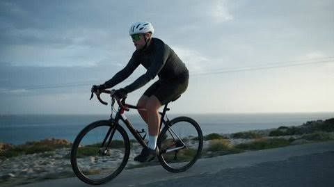
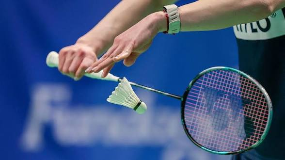
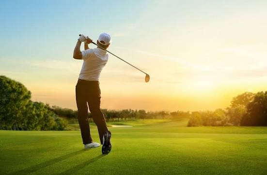
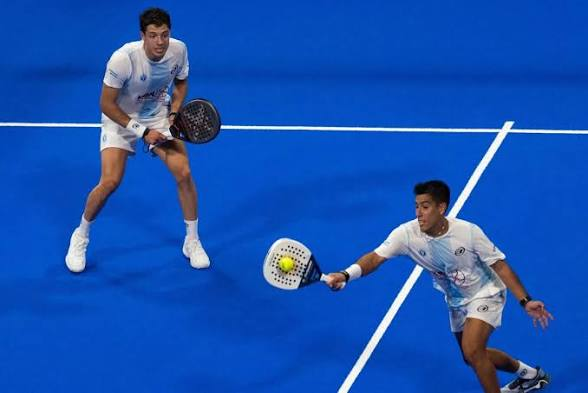

BEBERAPA OLAHRAGA

SEPAK BOLA
Sepak Bola merupakan cabang olahraga beregu yang dimainkan oleh dua tim beranggotakan masing-masing 11 pemain. Tujuan utamanya adalah mencetak gol sebanyak mungkin ke gawang lawan menggunakan kaki, kepala, atau anggota tubuh lainnya, kecuali tangan dan lengan yang hanya boleh digunakan oleh penjaga gawang di dalam area penalti.

BOLA VOLI
Bola Voli merupakan olahraga permainan beregu yang mempertemukan dua tim berisi masing-masing 6 pemain di lapangan yang dipisahkan oleh net. Setiap tim berusaha memukul bola melewati atas net agar jatuh di area lapangan lawan, dengan batas maksimal tiga kali sentuhan sebelum bola diseberangkan.

BOLA BASKET
Bola Basket merupakan olahraga berkelompok yang terdiri dari dua tim beranggotakan masing-masing 5 pemain yang saling bertanding mencetak poin dengan cara memasukkan bola ke dalam keranjang (ring) lawan. Permainan ini mengandalkan teknik menggiring bola (dribbling), mengoper (passing), dan menembak (shooting).

LARI
Lari merupakan cabang olahraga atletik yang dilakukan dengan melangkahkan kaki secara cepat sehingga pada momen tertentu kedua kaki melayang dan tidak menyentuh tanah. Lari terbagi menjadi beberapa kategori berdasarkan jaraknya, mulai dari lari jarak pendek (sprint), jarak menengah, hingga jarak jauh (maraton).

RENANG
Renang merupakan olahraga air yang dilakukan dengan menggerakkan anggota tubuh, terutama koordinasi tangan dan kaki, untuk menjaga tubuh tetap mengapung dan melaju di dalam air. Gaya utama yang umum dimainkan meliputi gaya bebas, gaya dada, gaya punggung, dan gaya kupu-kupu.

BERSEPEDA
Bersepeda merupakan aktivitas fisik atau olahraga yang menggunakan sepeda sebagai media utama dengan cara mengayuh pedal untuk melaju di berbagai lintasan, seperti jalan raya, trek balap (velodrome), maupun jalur pegunungan. Olahraga ini bermanfaat untuk melatih kekuatan otot kaki, keseimbangan, serta daya tahan jantung dan paru-paru.

BULU TANGKIS
Bulu Tangkis merupakan olahraga raket yang dimainkan oleh dua orang (tunggal) atau dua pasangan (ganda) yang saling berhadapan di lapangan yang dibatasi oleh net. Pemain memukul kok (shuttlecock) menggunakan raket agar melewati net dan jatuh di area permainan lawan untuk mencetak poin.

GOLF
Golf merupakan olahraga ketepatan yang dimainkan di lapangan terbuka luas dengan cara memukul bola kecil menggunakan tongkat pemukul khusus (club). Tujuannya adalah memasukkan bola ke dalam rangkaian lubang (hole) secara berurutan dengan jumlah pukulan sesedikit mungkin.

PADEL
Padel merupakan olahraga raket yang memadukan unsur permainan tenis dan squash, umumnya dimainkan secara ganda di lapangan tertutup berdinding kaca yang dipisahkan oleh net. Pemain menggunakan raket padat tanpa senar yang memiliki lubang-lubang kecil untuk memukul bola melewati net, serta diperbolehkan memanfaatkan pantulan dinding kaca di area sendiri untuk mengembalikan bola ke arah lawan.